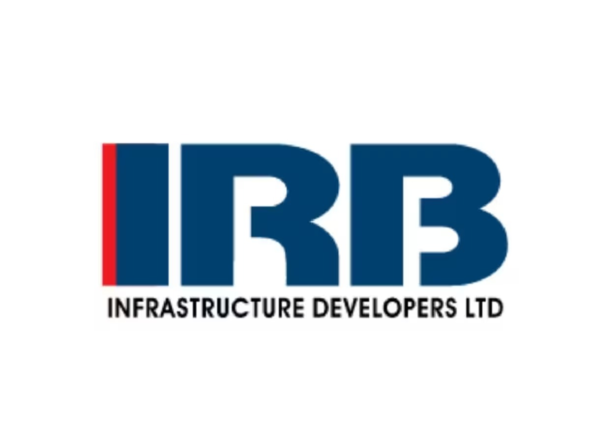
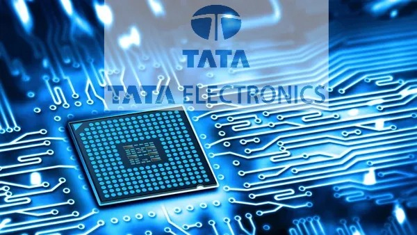

IRB Infrastructure
IRB Infrastructure Developers Limited (IRB Infra) will raise debt of up to $200 million “by way of issuance and allotment of foreign currency denominated notes, including USD-denominated bonds or other debt securities,” according to the company’s stock exchange filing.

Tata Electronics
Tata Electronics on Wednesday announced appointing Bobby Mitra as chief information officer (CIO) and president of artificial intelligence (AI) and digital transformation. He will drive “enterprise-wide initiatives” in the technologies for electronic manufacturing services, semiconductor assembly and test, semiconductor foundry, and design services businesses.